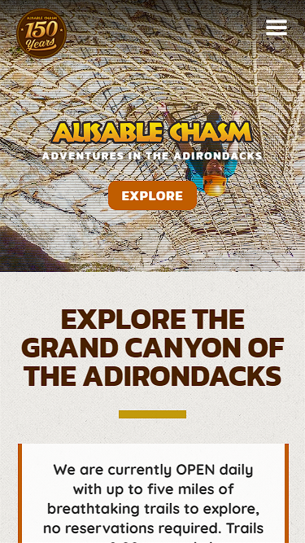
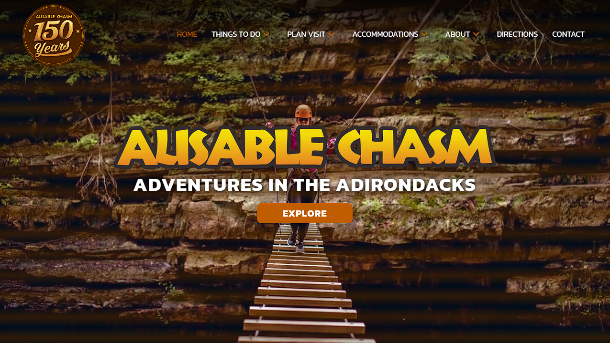
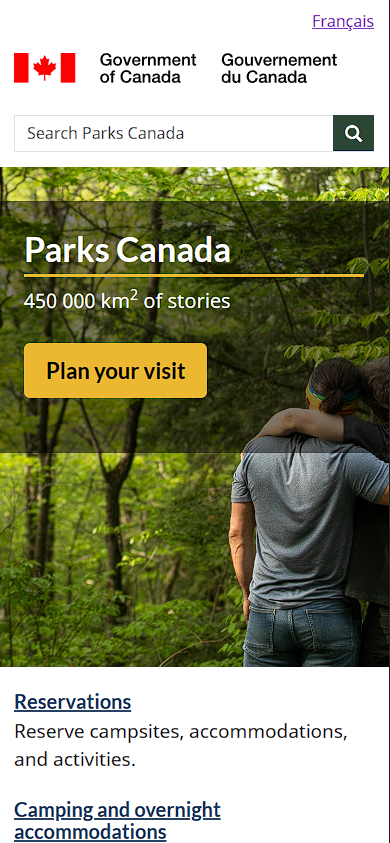
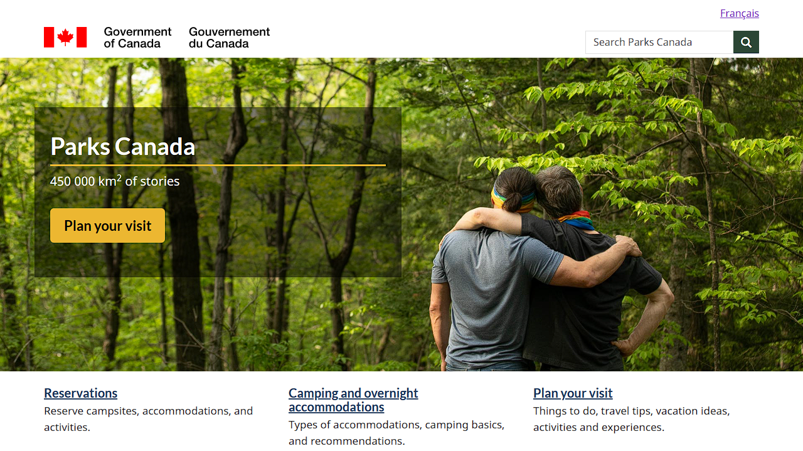
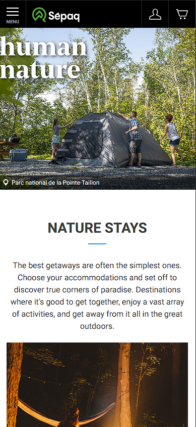
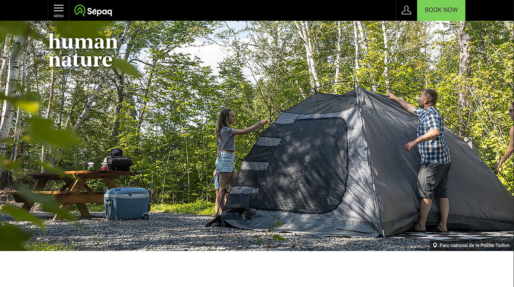

Ausable Chasm
Ausable Chasm is a camping site beside the Ausable River and where we can do Via Ferrata and Float tours on raft amongst many others things to do.
I do like the design of the website especially since the first things you see is the kinds of activities we can do.
There's also a call to action button in which we want to click.
I alse like the navigation bar on top.
The mobile version is the exact same, with the menubar hidden.


Parks Canada
On the Parks Canada's website you can see all the parks with their location, history and also do some reservations.
I don't like the design of the website especially since there's too much text and duplicates.
For every links there's a list of what to find under that link and there's a lot of about. (I'm getting lost)
There's no navigation bar so we need to search within the page to find the things we want. Altought there's a search box at least.
The mobile version is the exact same and the top image is cropped so we only one of the two persons.


Parks Canada
On the Sepaq parks's website you can reserve camping site and cabins, see all the outdoor activities and the exceptional places.
I do like the design of the website especially since there's everything we need with not too much text and just enough pictures.
There is a zoom effect when hovering a clickable picture.
The menu bar have everything we want with expandable submenu.
The mobile version is the exact same and when the menu bar is open the page behind move down so no need to close the menu bar to see the full page.
